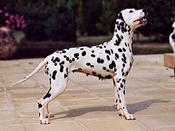

The Dalmatian is a breed of medium-sized dog,[3] noted for its unique black or liver spotted coat and mainly used as a carriage dog in its early days. Its roots trace back to Croatia and its historical region of Dalmatia.[4][5] Today, it is a popular family pet and many dog enthusiasts enter Dalmatians into kennel club competitions.
The Dalmatian is a medium sized,[3] well-defined, muscular dog with excellent endurance and stamina. When fully grown, according to the American Kennel Club breed standard, it stands from 19 to 23 inches (48 to 58 cm) tall, with males usually slightly larger than females.
Dalmatian puppies are born with plain white coats and their first spots usually appear within 3 to 4 weeks after birth, however spots are visible on their skin. After about a month, they have most of their spots, although they continue to develop throughout life at a much slower rate. Spots usually range in size from 30 to 60 mm, and are most commonly black or brown (liver) on a white background.
Dalmatians usually have litters of six to nine pups,[10] but they have been known to have larger litters on occasion, such as a massive eighteen puppy brood born in January 2009 (all were healthy).
Dalmatians are a relatively healthy and easy to keep breed. Like other breeds, Dalmatians display a propensity towards certain health problems specific to their breed, such as deafness, allergies and urinary stones. Reputable breeders have their puppies BAER (Brainstem Auditory Evoked Response) tested to ensure the status of the hearing on their pups. The Dalmatian Club of America lists the average lifespan of a Dalmatian at between 11 and 13 years, although some can live as long as 15 to 16 years.
© 2018 All rights reserved!